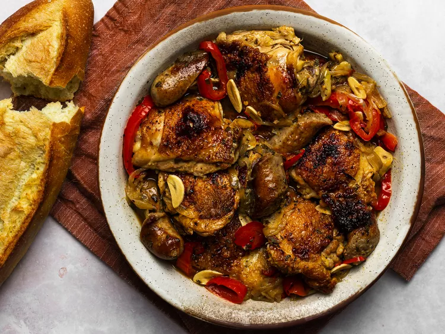
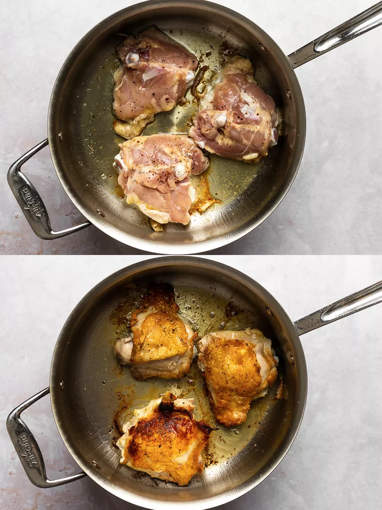
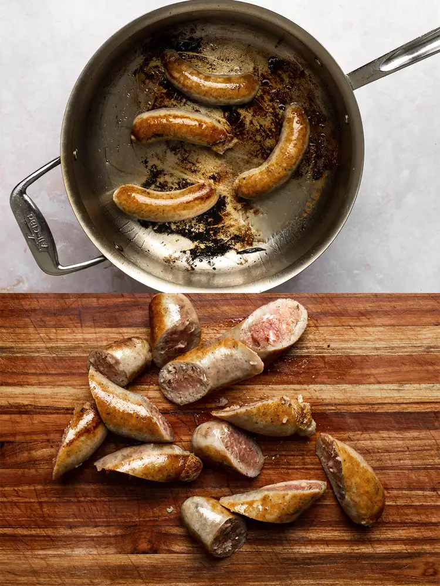
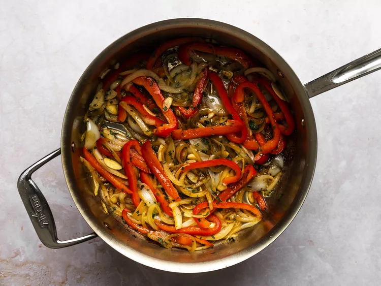
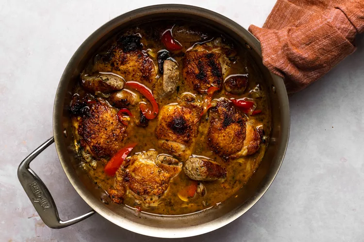

Home
Chicken Scarpariello (Braised Chicken With Sausage and Peppers)

Credit: Serious Eats / Julia Estrada
Description
The Italian-American dish of chicken braised with sausage and peppers in a sweet-and-sour sauce is the perfect weeknight meal.
Ingredients list
- 1150 g bone-in, skin-on chicken thighs (6 to 8 thighs)
- Kosher salt and freshly ground black pepper
- 15 ml vegetable oil
- 3 to 4 links sweet or hot Italian sausage (about 700 g)
- 1 medium onion, thinly sliced (170 g)
- 1 large red bell pepper, thinly sliced (170 g)
- 2 tablespoons finely minced fresh sage leaves (8 g)
- 6 cloves garlic, thinly sliced
- 8 hot pickled cherry peppers, thinly sliced, along with 1/4 cup (60 ml) pickling liquid from the jar
- 1 cup (240 ml) dry white wine
- 1 cup (240 ml) homemade or store-bought low-sodium chicken stock
- 2 tablespoons (28 g) sugar
Directions
- Adjust oven rack to center position and preheat oven to 350°F (175°C). Season chicken generously with salt and pepper. Heat oil in a 4- to 5-quart straight-sided sauté pan or Dutch oven over medium-high heat until shimmering. Add chicken, skin side down, and cook, without moving, until well browned and crisp, about 8 minutes total, lowering heat if pan starts to smoke excessively. Flip chicken and brown lightly on second side, about 3 minutes. Transfer chicken to a large plate and set aside.

Credit: Serious Eats / Julia Estrada
- Return skillet to heat without draining it and add sausage. Cook until well browned on first side, about 1 1/2 minutes, reducing heat if it starts smoking. Flip sausage and cook on second side until browned, about 1 1/2 minutes longer. Remove pan from heat, transfer sausage to a cutting board, and cut each link into 3 to 4 slices.

Credit: Serious Eats / Julia Estrada
- Return pan to heat, add onion and bell pepper, and cook, stirring and scraping up browned bits with a wooden spoon, until softened and starting to brown, about 4 minutes. Add sage and garlic, stir to combine, and cook until fragrant, about 1 minute.

Credit: Serious Eats / Julia Estrada
- Add pickled cherry peppers and their liquid, stirring and scraping up browned bits from bottom of pan with a wooden spoon. Add wine and cook until liquid is reduced by half, about 2 minutes. Add chicken stock and sugar, and stir to combine. Return sausage to pan, toss to combine, then return chicken pieces to pan skin side up, nestling them down among sauce, vegetables, and sausage.

Credit: Serious Eats / Julia Estrada
- Transfer to oven and cook until chicken is crisp and tender, about 30 minutes. Serve immediately, spooning sauce, vegetables, and sausage around chicken pieces.

Credit: Serious Eats / Julia Estrada